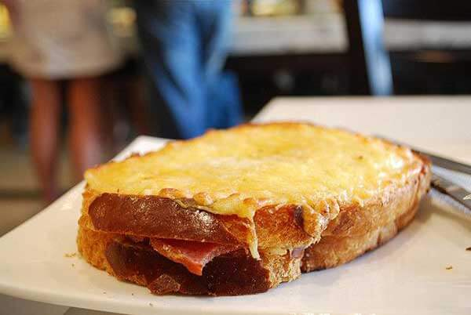
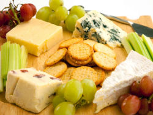
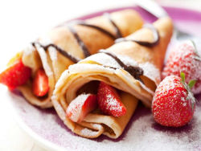
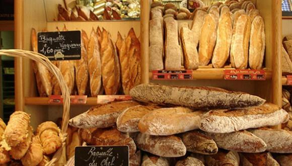

| |
|
|
|
|
La gastronomía de Francia está considerada una de las mejores del mundo, algo que convierte París en una de las capitales gastronómicas más reputadas.
La cocina francesa es muy rica y variada gracias a la calidad de las metrias primas y a la enorme diversidad cultural que posee Frnacia.
En la cultura gastronímca de Francia sobretodo predominan los quesos y su respoteria, pero antes de hablar de ellos vamos a conocer algunos de sus platos típicos:
|
 |
Francia es uno de los países productores de queso mas destacados a nivel mundial, es imposible elegir un queso diferente para cada uno de los días del año. |
 |
Una de las mayores delicias de la cocina francesa son sus panes, dulces y pasteles. París está lleno de panaderías y pastelerías en las que podréis disfrutar de las creaciones de los artesanos pasteleros recién salidas del horno. |
 |  |